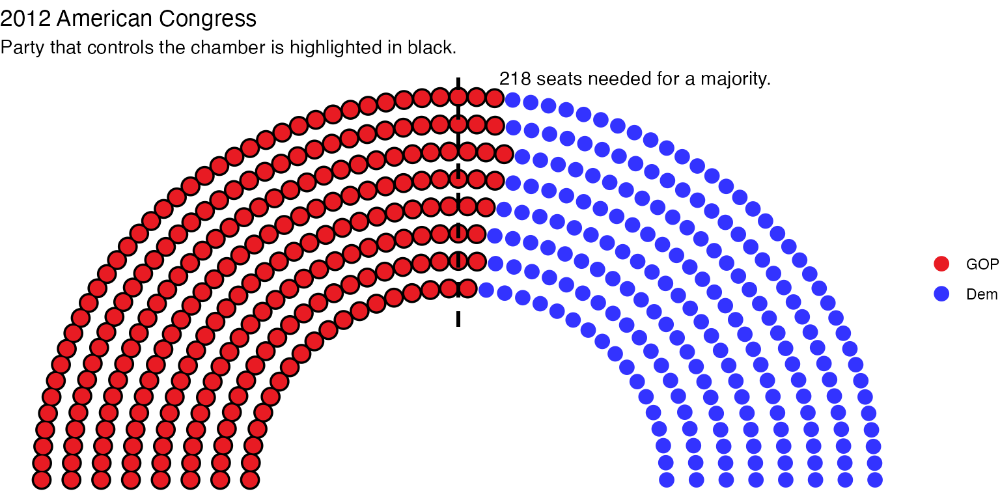

How to draw the majority threshold
Zoe Meers
2024-05-19
Source:vignettes/3_draw-majority-threshold_3.Rmd
3_draw-majority-threshold_3.RmdMajority thresholds
The majority threshold marks the point where one group has half or
more than half of the seats in parliament. To draw the majority
threshold on a parliament plot, the user should input the number that
constitues a majority as well as the type of parliament. The function
plots a line through the majority seat. By default, the majority
threshold adds an annotation noting the seats required for a government
to form. This can be turned off by writing
label = FALSE.
Some examples are as follows:
usa_12 <- election_data %>%
filter(country == "USA" &
house == "Representatives" &
year == "2012") %>%
parliament_data(election_data = .,
party_seats = .$seats,
parl_rows = 8,
type = "semicircle")
ggplot(usa_12, aes(x, y, colour = party_short)) +
geom_parliament_seats() +
geom_highlight_government(government == 1) +
draw_majoritythreshold(n = 218,
type = "semicircle") +
theme_ggparliament() +
labs(colour = NULL,
title = "2012 American Congress",
subtitle = "Party that controls the chamber is highlighted in black.") +
scale_colour_manual(values = usa_12$colour,
limits = usa_12$party_short)
#> Warning in ggplot2::geom_segment(ggplot2::aes(y = 0.8, yend = max(plot$data$y) + : All aesthetics have length 1, but the data has 435 rows.
#> ℹ Please consider using `annotate()` or provide this layer with data containing
#> a single row.
#get the data for the last election
uk_data <- election_data %>%
filter(country == "UK") %>%
filter(year == 2017) %>%
#parl_data it out
parliament_data(election_data = .,
party_seats = .$seats,
group = .$government,
parl_rows = NULL,
type = "opposing_benches")
#note that for opposing benches, parliament_data tries to calculate a number of rows per dot
#that allows clear visualisation of the majority line
#try to use a number of rows that is an exact divisor of the threshold
colscale =
#plot it
uk <- ggplot(uk_data, aes(x, y, colour = party_short)) +
scale_colour_manual(values = unique(uk_data$colour),
limits = unique(uk_data$party_short),
name = "Party") +
geom_parliament_seats(size = 1.5) +
draw_majoritythreshold(n = 325, type = "opposing_benches") +
coord_flip() +
theme_ggparliament() +
theme(legend.position = c("bottom"))
uk
#> Warning in ggplot2::geom_segment(aes(y = y_pos_oppbenches + 0.5, yend = y_pos_oppbenches + : All aesthetics have length 1, but the data has 649 rows.
#> ℹ Please consider using `annotate()` or provide this layer with data containing
#> a single row.
australia <- election_data %>%
filter(country == "Australia" &
house == "Representatives" &
year == 2016)
australia1 <- parliament_data(election_data = australia,
party_seats = australia$seats,
parl_rows = 4,
type = "horseshoe")
au <-ggplot(australia1, aes(x, y, colour = party_short)) +
geom_parliament_seats() +
geom_highlight_government(government == 1) +
draw_majoritythreshold(n = 76,
type = "horseshoe") +
theme_ggparliament() +
labs(colour = NULL,
title = "Australian Parliament",
subtitle = "Government encircled in black.") +
scale_colour_manual(values = australia$colour,
limits = australia$party_short) +
theme(legend.position = 'bottom')
au
#> Warning in ggplot2::geom_segment(ggplot2::aes(y = 7.5, yend = 10.5, x = 0, : All aesthetics have length 1, but the data has 150 rows.
#> ℹ Please consider using `annotate()` or provide this layer with data containing
#> a single row.
germany <- election_data %>%
filter(year == 2017 &
country == "Germany")
germany <- parliament_data(election_data = germany,
parl_rows = 12,
party_seats = germany$seats,
plot_order = germany$government,
type = 'semicircle')
german_parliament <- ggplot(germany, aes(x, y, colour = party_short)) +
geom_parliament_seats() +
geom_highlight_government(government == 1) +
draw_majoritythreshold(n = 355, label = FALSE, type = "semicircle") +
labs(colour="Party",
title="Germany 2017 Election Results") +
theme_ggparliament() +
scale_colour_manual(values = germany$colour,
limits = germany$party_short)
german_parliament
#> Warning in ggplot2::geom_segment(ggplot2::aes(y = 0.8, yend = max(plot$data$y) + : All aesthetics have length 1, but the data has 709 rows.
#> ℹ Please consider using `annotate()` or provide this layer with data containing
#> a single row.